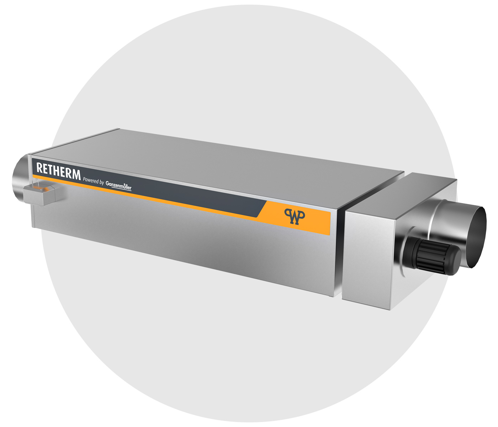

Energiebilanz & Potenzial
Wir messen und rechnen, bevor wir anbieten: Temperaturen, Volumenströme, Wärmebedarf – und sagen ehrlich, ob sich die Anlage für Sie trägt.
Wärmerückgewinnung aus Abgas · Komplettanlagen
Wir machen daraus eine nutzbare Wärmequelle – als schlüsselfertige Anlage, geplant und gebaut, nicht nur geliefert. Vom Kilowatt- bis in den Megawattbereich, branchenoffen: Lebensmittel, Metall, Chemie, Keramik, Trocknung, Blockheizkraftwerke und mehr.
01 — Der Schnelltest
Sie müssen keine Branche ankreuzen und keinen Katalog wälzen. Ob sich Wärmerückgewinnung für Sie lohnt, entscheidet eine einzige Bedingung – und die erkennen Sie selbst: Aus Ihrem Betrieb geht heißes Abgas nach draußen.
Ob das Abgas aus einem Industrieofen, Dampfkessel, Blockheizkraftwerk, einer Trocknungsanlage oder einer Backofenanlage stammt, ist zweitrangig – die Physik ist dieselbe. Wir kühlen es ab, bevor es durch den Kamin verschwindet, und geben die Wärme zurück in Ihren Betrieb.
Je heißer und je länger es strömt, desto besser die Rechnung. Und mit steigenden CO₂-Preisen wird das Wegwerfen jedes Jahr teurer.
02 — Abgasquellen
Jede Quelle hat ihre Eigenheiten – Temperaturniveau, Volumenstrom, Betriebsprofil, Kondensat. Deshalb planen wir jede Anlage individuell. Was gleich bleibt: die Komplettlösung aus einer Hand.
Härten, Schmelzen, Brennen, Thermoprozess – hohe Temperaturen und lange Laufzeiten machen Öfen zur ergiebigsten Abwärmequelle.
Mehr erfahren → 160–230 °CDer Klassiker: Abgaswärme hinter dem Kessel nutzen und den Wirkungsgrad der Dampferzeugung spürbar anheben.
Mehr erfahren → 400–550 °CBHKW-Abgas ist extrem heiß und fällt über tausende Betriebsstunden an – ideale Bedingungen für die Nachrüstung.
Mehr erfahren → 60–150 °CWarme, feuchte Abluft steckt voller Energie – inklusive der Kondensationswärme, die andere Systeme verschenken.
Mehr erfahren → 200–300 °CUnser Heimspiel: Rauchgas und Schwaden von bis zu sechs Öfen in einer Anlage – gemeinsam mit WP Bakery Technologies.
Mehr erfahren → ? °CWenn heißes Abgas nach außen geht, lohnt der Blick – egal woraus. Schicken Sie uns Ihre Eckdaten.
Zum Potenzial-Check →03 — Das Prinzip
Ein Abgaswärmetauscher überträgt die Wärme des Abgases indirekt auf Wasser. Ein Pufferspeicher verteilt sie dorthin, wo Ihr Betrieb sie braucht. Und der Bypass führt das Abgas jederzeit direkt zum Kamin – bei Wartung, bei Störung oder wenn der Pufferspeicher voll ist. Ihre Produktion läuft immer.

Die komplette Rückgewinnung in einem Gehäuse: Abgaswärmetauscher, Saugzug und Bypassklappe. Montiert ohne Bodenstellplatz – an der Decke abgehängt, direkt über der Anlage oder auf einer zweiten Technikebene. Ihre Produktionsfläche bleibt frei.
Und wenn Wartung ansteht, eine Störung auftritt oder der Pufferspeicher schlicht voll ist? Dann öffnet der Bypass, und das Abgas nimmt den direkten Weg zum Kamin. Ihre Produktion merkt davon nichts – sie hat immer Vorrang.


04 — Leistungstiefe
Reine Wärmetauscher-Hersteller gibt es viele. Selten ist ein Partner, der die fertige Energiequelle liefert: von der Energiebilanz bis zur Inbetriebnahme, alles außer Elektro und Sanitär – aus einer Hand.
Wir messen und rechnen, bevor wir anbieten: Temperaturen, Volumenströme, Wärmebedarf – und sagen ehrlich, ob sich die Anlage für Sie trägt.
Anlagenauslegung bis zu Aufstellplan und Rohrführung – inklusive belastbarer Daten für das Einsparkonzept Ihres Energieberaters.
Selbstreinigender Wärmetauscher, Pufferspeicher, Siemens-Steuerung – entwickelt und gefertigt in Deutschland.
Kaminbau ist unser Ursprungshandwerk: Saugzug, Zugregelung und Kaminanbindung kommen bei uns nicht vom Subunternehmer.
Montage an der Decke, über der Anlage oder auf der Technikebene – ohne Stellfläche. Einbindung in Heizung und Warmwasser, Einweisung Ihres Teams, bei laufendem Betrieb.
Jährlicher Service aus demselben Haus, TÜV-Süd-zertifizierte Anlagen, serienmäßiger Bypass – Ihre Produktion steht nie.
05 — Wirtschaftlichkeit
Abwärmenutzung wird über die Bundesförderung EEW gefördert; die Sätze hängen von Unternehmensgröße und Projekt ab. Die goldene Regel: Antrag vor Auftrag – wer früh plant, verliert keine Förderung. Wir liefern die Auslegungsdaten für das Einsparkonzept und stimmen uns direkt mit Ihrem Energieberater ab.
Seit Jahrzehnten bauen wir Wärmerückgewinnung für unterschiedliche Abgas-Konstellationen – im Kilowatt- wie im Megawattbereich, im Inland und international. Die Bandbreite ist der Beleg: Wir beherrschen auch Ihre Konstellation.
06 — Häufige Fragen
Wenn heißes Abgas nach außen geht, lohnt der Blick fast immer. Drei Faktoren entscheiden: die Abgastemperatur (interessant ab etwa 150 °C), die Betriebsstunden und ein Wärmebedarf im Haus – Heizung, Warmwasser oder Prozesswärme. Der Potenzial-Check rechnet es Ihnen in einer Minute aus, mit offenen Annahmen und ehrlichem Urteil.
Als Richtwert für ein Komplettsystem im unteren Leistungsbereich rechnen wir mit 60.000 bis 80.000 Euro; größere Anlagen werden individuell kalkuliert. Entscheidend ist weniger der Preis als die Amortisation: Bei laufenden Prozessen liegt sie typisch bei wenigen Jahren – der Rechner zeigt Ihnen die Spanne für Ihre Zahlen.
Ja, Abwärmenutzung ist über die Bundesförderung EEW förderfähig – als BAFA-Zuschuss oder als KfW-Kredit 295 mit Tilgungszuschuss. Die Sätze hängen von Unternehmensgröße und Programm ab, Stand 2026 bis zu 45 Prozent für kleine Unternehmen. Die wichtigste Regel: Antrag vor Auftrag. Alle Details auf der Förderseite.
Nein – dafür sorgt der Bypass. Bei Wartung, bei einer Störung oder wenn der Pufferspeicher voll ist, strömt das Abgas direkt zum Kamin, als gäbe es die Anlage nicht. Öfen, Kessel oder Motoren laufen unverändert weiter. Geprüft und zertifiziert vom TÜV Süd.
Unser Sweetspot liegt bei 150 bis 250 °C – typisch für Kessel, Backöfen und viele Prozesse. Deutlich heißeres Abgas wie am BHKW (400–550 °C) ist erst recht geeignet. Bei feuchter Abluft, etwa aus Trocknern, gewinnt der Wärmetauscher zusätzlich die Kondensationswärme des Wasserdampfs zurück.
Das hängt von Temperatur, Volumenstrom, Betriebsstunden und Ihrem Energiepreis ab. Typisch sind wenige Jahre, mit Förderung entsprechend weniger – und steigende CO₂-Preise verkürzen die Rechnung Jahr für Jahr. Der Potenzial-Check nennt Ihnen eine ehrliche Spanne und sagt auch, wenn es sich nicht lohnt.
Keinen Bodenstellplatz. Die RETHERM-Einheit wird an der Decke abgehängt, direkt über der Anlage montiert oder auf einer zweiten Technikebene installiert – Ihre Produktionsfläche bleibt frei. Nur der Pufferspeicher braucht einen Stellplatz, üblicherweise im Heizraum.
Kontakt
Am schnellsten geht es über den Potenzial-Check – oder Sie rufen einfach an. Jede Anfrage beantworten wir persönlich, in der Regel innerhalb von 24 Stunden.